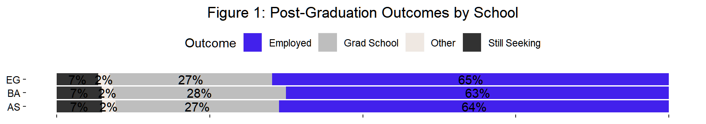
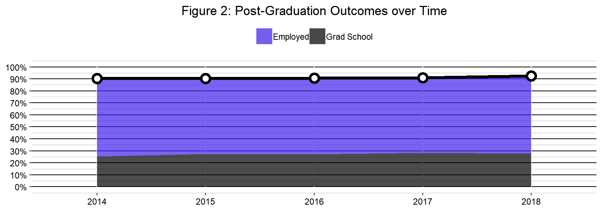
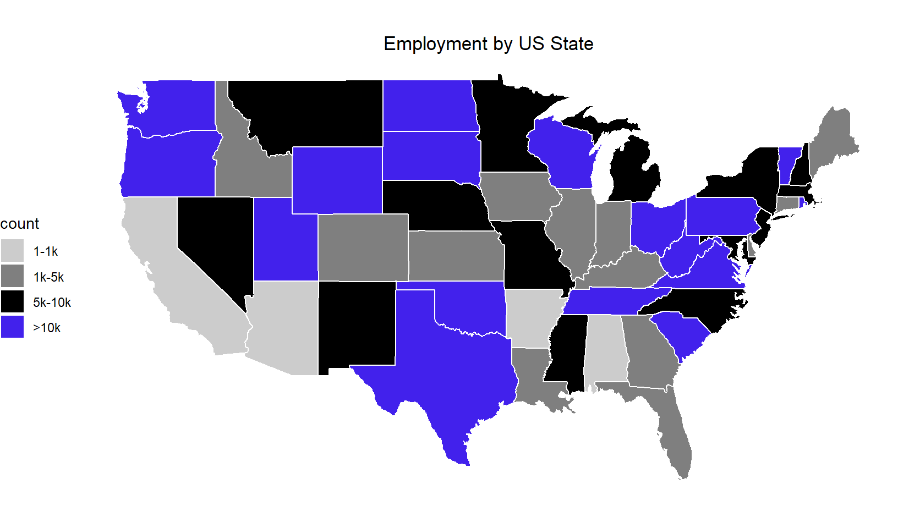
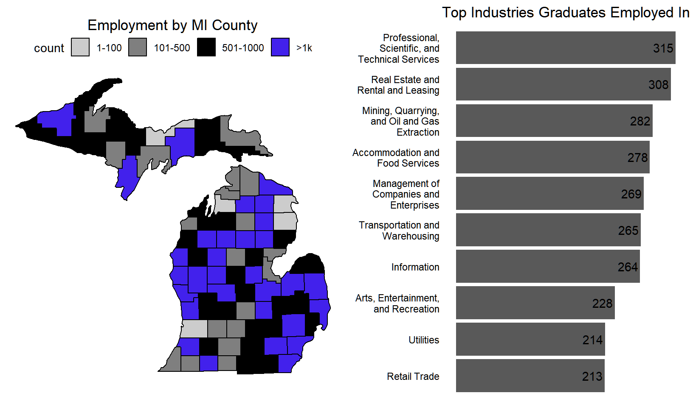
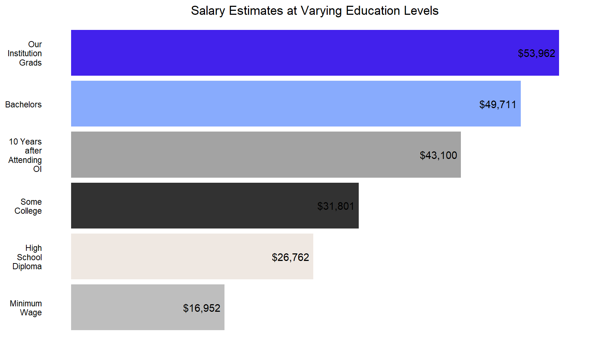
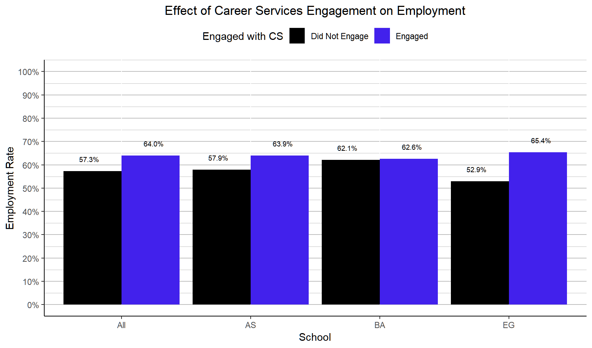
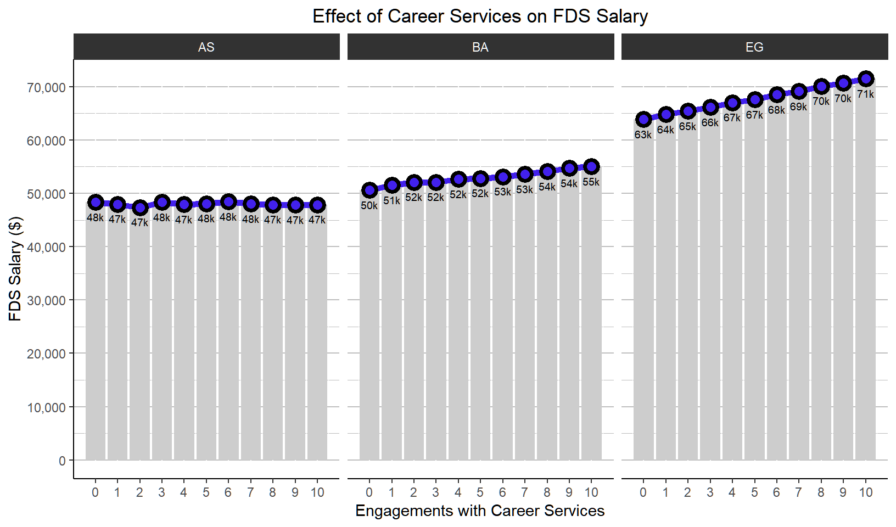

See code and output for typical report features.
This is a report I produced as a teaching tool for the Pre-Conference Workshop at the Michigan Association for Institutional Research. I modified it slightly so it’s more blog friendly (e.g., echo=TRUE on all code chunks), but the report was originally designed to be printed or saved as a PDF. Feel free to browse the report elements and expand the code chunks that interest you. All the data here is fabricated. You can check-out my post about creating interesting datasets to learn more about how I created the data here and to see the full report in pdf form.
#bootstrap themes: https://bootswatch.com/united/
knitr::opts_chunk$set(echo = TRUE,message=FALSE,warning=FALSE)
options(scipen=999) # avoid scientifit notation
library(dplyr)
library(tidyr)
library(ggplot2)
library(scales)
library(stringr)
# include geospatial plotting!
# learning resource and inspiration
# http://eriqande.github.io/rep-res-web/lectures/making-maps-with-R.html
library(maps)
library(gridExtra)
oi_colors <- c("gray","#EFE8E2","#323232","#a3a3a3","#88abfd","#4221ec")
roi_df <- data.frame(
income_source = c("Minimum Wage",
"High School Diploma",
"Some College",
"10 Years after Attending OI",
"Bachelors"),
amount = c(8.15*40*52, # source: Department of Labor Statistics
26762, # source: https://factfinder.census.gov/faces/tableservices/jsf/pages/productview.xhtml?src=CF
31801, # source: Census.gov ^
43100, # source: college scorecard
49711) # source: Census.gov ^
,stringsAsFactors = FALSE)
industry_df <- read.csv("datasets/industry_df.csv",
stringsAsFactors = FALSE)
air_df <- read.csv("datasets/air_df.csv",
stringsAsFactors = FALSE)
air_df <- air_df %>%
rename(admit_type = ATYP) %>%
mutate(
school_recode = recode(school,
"AS" = "Arts and Sciences",
"BA" = "Business",
"EG" = "Engineering and Computer Science"),
year = substr(term_code,1,4),
term_type =
ifelse(
substr(term_code,5,6)=="10",
"Winter",
"Fall"),
term_desc =
ifelse(
substr(term_code,5,6)=="10",
paste("Winter",substr(term_code,1,4),sep=" "),
paste("Fall",substr(term_code,1,4),sep=" ")),
career_use_bin = ifelse(career_use>0,"Engaged","Did Not Engage"), #use case_when instead?
pg_outcome_bin = case_when(post_grad_outcome %in%
c("Employed","Grad School") ~ TRUE
,post_grad_outcome %in%
c("Still Seeking","Other") ~ FALSE
)
) %>%
left_join(industry_df,
by="student_id") %>%
select(-student_id)Data was integrated from three sources: Banner, Handshake, and the First-Destination Survey results. While data from Banner and Handshake can be considered extremely accurate, the First-Destination Survey (FDS) results should be interpreted with the understanding that the information is self-reported by students within 6 months of graduation.
air_df %>%
group_by(post_grad_outcome) %>%
rename(Outcome = post_grad_outcome) %>%
summarise(Count=n()) %>%
mutate(Percent=percent(Count/sum(Count)))| Outcome | Count | Percent |
|---|---|---|
| Employed | 6367 | 63.7% |
| Grad School | 2721 | 27.2% |
| Other | 194 | 1.9% |
| Still Seeking | 718 | 7.2% |
ggplot(air_df %>%
group_by(post_grad_outcome,school) %>%
rename(Outcome = post_grad_outcome) %>%
summarise(Count=n()) %>%
group_by(school) %>%
mutate(pct = Count/sum(Count))
,aes(x=school,y=pct,fill=Outcome)) +
geom_col() +
geom_text(aes(label=percent(pct,accuracy = 1),y=pct,group=Outcome),position = position_stack(.5)) +
coord_flip() +
scale_fill_manual(values=c(oi_colors[length(oi_colors)],oi_colors)) +
ggtitle("Figure 1: Post-Graduation Outcomes by School") +
theme(panel.background = element_blank(),
panel.grid.major = element_blank(),
axis.line.x = element_blank(),
axis.text.x = element_blank(),
axis.line.y = element_blank(),
axis.title = element_blank(),
axis.text.y = element_text(color='black'),
legend.position="top",
plot.title = element_text(hjust = 0.5))
ggplot(
air_df %>%
group_by(year) %>%
count(pg_outcome_bin) %>%
mutate(pct = n/sum(n)) %>%
filter(pg_outcome_bin==TRUE,year!=2013)
,aes(x=year,y=pct,group=1)) +
geom_area(aes(x=year,y=pct,group=post_grad_outcome,fill=post_grad_outcome),data=(air_df %>%
group_by(year,post_grad_outcome) %>%
count(pg_outcome_bin) %>% group_by(year) %>%
mutate(pct = n/sum(n)) %>%
filter(pg_outcome_bin==TRUE,year!=2013)),alpha=.7) +
geom_line(size=1.5) +
geom_point(size=3,color="black",fill = "white",stroke=2,shape=21) +
scale_y_continuous(breaks = seq(0,1,.1),
labels = scales::percent(seq(0,1,.1))
,limits = c(0,1)
) +
scale_fill_manual(values=c(oi_colors[length(oi_colors)],'black')) +
ggtitle("Figure 2: Post-Graduation Outcomes over Time") +
theme(panel.background = element_blank(),
panel.grid.major.y = element_line(color = 'black'),
panel.grid.minor.y = element_line(color = 'gray'),
axis.line.x = element_blank(),
axis.text.x = element_text(color='black'),
axis.line.y = element_blank(),
axis.title = element_blank(),
axis.text.y = element_text(color='black'),
legend.title = element_blank(),
legend.position="top",
plot.title = element_text(hjust = 0.5))
#note: I am creating dummy data on the fly for counts by region
states <- map_data("state")
states <- states %>%
mutate(count = cut(1:nrow(states), #dummy data
c(-Inf,0, 1000, 5000, 10000, Inf),
labels=c("0","1-1k","1k-5k",'5k-10k','>10k')))
ggplot(data = states) +
geom_polygon(aes(x = long, y = lat, fill = count, group = group), color = "white") +
coord_fixed(1.3) +
scale_fill_manual(values=c('gray80','gray50','black',oi_colors[length(oi_colors)])) +
ggtitle("Employment by US State") +
theme_void() +
theme(legend.position = "left",
plot.title = element_text(hjust = 0.5))
counties <- map_data("county")
counties <- subset(counties, region %in% c( "michigan"))
counties <- counties %>%
mutate(count = cut(1:nrow(counties),
c(0, 100, 500, 1000, Inf),
labels=c("1-100","101-500",'501-1000','>1k')))
g1 <- ggplot(data = counties) +
geom_polygon(aes(x = long, y = lat, fill = count, group = group), color = "black") +
coord_fixed(1.3) +
scale_fill_manual(values=c('gray80','gray50','black',oi_colors[length(oi_colors)])) +
ggtitle("Employment by MI County") +
theme_void() +
theme(legend.position = "top",
plot.title = element_text(hjust = 0.5,vjust = 3))
g2 <- ggplot(air_df %>%
filter(!is.na(industry)) %>%
count(industry) %>%
arrange(n) %>%
slice(1:10) %>%
mutate(industry = factor(industry,levels=industry))
,aes(x=industry,y=n)) +
geom_col() +
coord_flip() +
scale_x_discrete(labels = function(x) stringr::str_wrap(x,width=20)) +
geom_text(aes(label=n),hjust=1.1 ) +
scale_fill_manual(values=oi_colors) +
ggtitle("Top Industries Graduates Employed In") +
theme(panel.background = element_blank(),
legend.position = "none",
axis.line.x = element_blank(),
axis.text.x = element_blank(),
axis.line.y = element_blank(),
axis.title = element_blank(),
axis.text.y = element_text(color='black'),
axis.ticks = element_blank(),
plot.title = element_text(hjust = 0.5))
grid.arrange(g1,g2,nrow=1)
Median annual salary for Our University graduates are observed to be higher than the yearly earnings of a full-time employee at minimum wage, a high school graduate with no college, an individual with some college, and graduates from other institutions.
knitr::kable(
air_df %>%
filter(!is.na(salary)) %>%
summarise(Count = n(),
Median = median(salary)) %>%
mutate(school="All") %>%
bind_rows(air_df %>%
filter(!is.na(salary)) %>%
group_by(school) %>%
summarise(Count = n(),
Median = median(salary))) %>%
select(school,everything()) %>%
mutate(Median = scales::dollar(Median))
,caption="Table 2: Median annual salary by school.")| school | Count | Median |
|---|---|---|
| All | 6367 | $53,961.75 |
| AS | 2119 | $47,983.14 |
| BA | 2095 | $53,406.32 |
| EG | 2153 | $68,963.44 |
ggplot(roi_df %>%
bind_rows(air_df %>%
summarise(income_source = "Our Institution Grads",
amount = round(median(salary,na.rm=TRUE)))) %>%
mutate(income_source = factor(income_source, levels = income_source))
,aes(x=income_source,y=amount,fill=income_source)) +
geom_col() +
coord_flip() +
scale_x_discrete(labels = function(x) stringr::str_wrap(x,width=10)) +
geom_text(aes(label=scales::dollar(amount)),hjust=1.1 ) +
scale_fill_manual(values=oi_colors) +
ggtitle("Salary Estimates at Varying Education Levels") +
theme(panel.background = element_blank(),
legend.position = "none",
axis.line.x = element_blank(),
axis.text.x = element_blank(),
axis.line.y = element_blank(),
axis.title = element_blank(),
axis.text.y = element_text(color='black'),
axis.ticks = element_blank(),
plot.title = element_text(hjust = 0.5))
The charts and inferential statistics below show that engagement with Career Services is associated with post-graduation employment and salary. They also highlight differences by academic school. However, we cannot be sure that this association is causal. That is, other variables may account for the positive relationship between Career Services engagement and salary such as personality factors (e.g., students who are likely to seek out support services are also likely to acquire higher salaries).
cu_x_school_to_co_df <- air_df %>%
group_by(career_use_bin,school) %>%
count(post_grad_outcome) %>%
mutate(pct = n/sum(n)) %>%
bind_rows(air_df %>%
group_by(career_use_bin) %>%
count(post_grad_outcome) %>%
mutate(pct = n/sum(n),
school="All")) %>%
filter(post_grad_outcome=="Employed")
ggplot(cu_x_school_to_co_df,
aes(x=school,y=pct,fill=career_use_bin)) +
geom_col(position="dodge") +
geom_text(position = position_dodge(1),
vjust=-1.75,
size = 2.5,
aes(x = school,
y = pct,
group = career_use_bin,
label=scales::percent(pct))) +
labs(title = "Effect of Career Services Engagement on Employment",
x="School",
y="Employment Rate",
fill = "Engaged with CS") +
scale_y_continuous(breaks=seq(0,1,0.1),limits = 0:1,
labels=scales::percent) +
scale_fill_manual(values=c('black',oi_colors[length(oi_colors)])) +
theme(panel.background = element_blank(),
legend.position = "top",
panel.grid.major.y = element_line(color="gray"),
panel.grid.minor.y=element_line(color="gray"),
axis.line = element_line(colour="black"),
plot.title = element_text(hjust = 0.5))
cu_x_school_to_sal_df <- air_df %>%
group_by(career_use,school) %>%
summarise(gpa_mean = mean(gpa),
salary_median = median(salary,na.rm = TRUE))
ggplot(cu_x_school_to_sal_df,
aes(x=career_use,y=salary_median)) +
facet_grid(~school) +
geom_col(fill="#cdcdcd") +
geom_line(size=2,colour=oi_colors[length(oi_colors)]) +
geom_point(size=3,color="black",fill = oi_colors[length(oi_colors)],stroke=2,shape=21) +
geom_text(position = position_dodge(width = .7),
vjust=2.25,
size = 2.5,
aes(x = career_use,
y = salary_median,
# group = p_outcome,
label=paste0(substr(salary_median,1,2),"k"))) +
labs(title = "Effect of Career Services on FDS Salary",
x="Engagements with Career Services",
y="FDS Salary ($)",
fill = NULL) +
scale_y_continuous(breaks=seq(0,max(cu_x_school_to_sal_df$salary_median),10000),
labels=format(
seq(0,max(cu_x_school_to_sal_df$salary_median),10000),big.mark = ","),
minor_breaks = seq(0, max(cu_x_school_to_sal_df$salary_median),5000)) +
scale_x_continuous(breaks=0:max(cu_x_school_to_sal_df$career_use)) +
theme(panel.background = element_blank(),
panel.grid.major.y = element_line(color="gray"),
panel.grid.minor.y=element_line(color="gray"),
axis.line = element_line(colour="black"),
strip.background = element_rect(colour="#323232", fill='#323232'),
strip.text = element_text(color="white"),
plot.title = element_text(hjust = 0.5))
stat_test <- summary(
lm(salary ~ career_use,
data=air_df %>% filter(post_grad_outcome=="Employed"))
)
knitr::kable(data.frame(stat_test$r.squared),align="l")| stat_test.r.squared |
|---|
| 0.0141095 |
knitr::kable(data.frame(stat_test$coefficients) %>%
tibble::rownames_to_column("Variable") %>%
mutate(Pr...t.. = format.pval(Pr...t..,eps=.001)) %>%
rename("P Value" = Pr...t..))| Variable | Estimate | Std..Error | t.value | P Value |
|---|---|---|---|---|
| (Intercept) | 54390.7059 | 275.67125 | 197.302786 | < 0.001 |
| career_use | 380.9833 | 39.91773 | 9.544214 | < 0.001 |
stat_test2 <- summary(
lm(salary ~ career_use + school,
data=air_df %>% filter(post_grad_outcome=="Employed"))
)
knitr::kable(data.frame(stat_test2$r.squared),align="l")| stat_test2.r.squared |
|---|
| 0.8981245 |
knitr::kable(data.frame(stat_test2$coefficients) %>%
tibble::rownames_to_column("Variable") %>%
mutate(Pr...t.. = format.pval(Pr...t..,eps=.001)) %>%
rename("P Value" = Pr...t..))| Variable | Estimate | Std..Error | t.value | P Value |
|---|---|---|---|---|
| (Intercept) | 45615.7687 | 103.99511 | 438.63379 | < 0.001 |
| career_use | 374.2273 | 12.83796 | 29.15006 | < 0.001 |
| schoolBA | 5489.4561 | 92.15048 | 59.57057 | < 0.001 |
| schoolEG | 20733.3135 | 91.49875 | 226.59668 | < 0.001 |
stat_test3 <- summary(
lm(salary ~ career_use * school,
data=air_df %>% filter(post_grad_outcome=="Employed"))
)
knitr::kable(data.frame(stat_test3$r.squared),align="l")| stat_test3.r.squared |
|---|
| 0.9084725 |
knitr::kable(data.frame(stat_test3$coefficients) %>%
tibble::rownames_to_column("Variable") %>%
mutate(Pr...t.. = format.pval(Pr...t..,eps=.001)) %>%
rename("P Value" = Pr...t..))| Variable | Estimate | Std..Error | t.value | P Value |
|---|---|---|---|---|
| (Intercept) | 48250.72541 | 147.71121 | 326.655805 | < 0.001 |
| career_use | -42.29443 | 21.22378 | -1.992785 | 0.046328 |
| schoolBA | 2695.45238 | 205.63893 | 13.107695 | < 0.001 |
| schoolEG | 15681.54468 | 207.64800 | 75.519846 | < 0.001 |
| career_use:schoolBA | 442.36745 | 29.82779 | 14.830713 | < 0.001 |
| career_use:schoolEG | 800.53619 | 29.89925 | 26.774456 | < 0.001 |